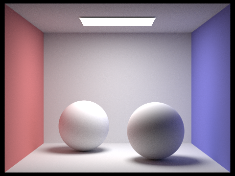
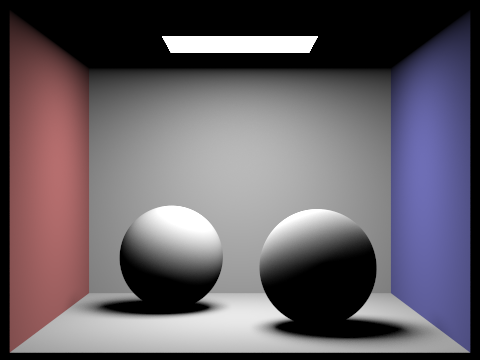

CS184/284A Spring 2025 Homework 3 Write-Up
Link to webpage: https://cal-cs184-student.github.io/hw-webpages-onion/hw3/index.html
Link to GitHub repository: https://github.com/cal-cs184-student/sp25-hw3-anita
Overview
In this homework, I implemented a path tracer that supports direct illumination, global illumination, and adaptive sampling. The assignment began with a simple ray tracing algorithm and I built upon it to speed up the rendering with a bounding volume hierarchy. With this BVH structure, I checked for ray intersection with surfaces to follow where lights hit within a scene. This implements two types of direct illumination, uniform hemisphere sampling and importance sampling, as well as indirect illumination that traces beyond the first bounce to get global illumination. In the final part of this assignment, I implemented adaptive sampling to reduce the noise generated by the light rays in the images as well as speed up the rendering times.
This has been the most difficult homework for me by far because I've struggled to understand the radiometry portion of this class. Although I didn't really understand the concepts during lecture, exploring them through this assignment has helped me understand ray tracing and global illumination work. It's been interesting to see all the different combinations one can use during rendering and how it influences the quality of the image and also how much time it takes to render.
Part 1: Ray Generation and Scene Intersection
In this part of the assignment, I implemented a basic ray tracing algorithm that generates rays and calculates triangle and sphere intersection tests. After a ray is generated, the algorithms check whether or not they intersect any object in a given scene and calculate the point of intersection and normal vector of the object.
The algorithm starts by first generating a ray in the world space from the inputted normalized image coordinates using the function generate_ray().
I first start by calculating the bottom left, (0, 0), and top right (1, 1) points of the camera space which are mapped to (-tan(hFov/2), -tan(vFov/2)) and (tan(hFov/2), tan(vFov/2))
respectively with Z=-1. Here, the hFov and vFov are related to the x and y coordinate boundaries of the camera space respectively, and they are converted into radians from degrees to ensure
proper calculation. Then, I use linear interpolation to find the positions of the normalized X and Y coordinates in the camera space. I put these into a Vector(X, Y, -1) and use the c2w matrix
to convert the points into the world space to get the direction of the ray. This function returns a ray with its origin at the inputted point and the normalized direction vector
calculated prior.
To trace the rays generated above, I use a for loop to calculate num_samples samples out of different sampled points within a pixel (x, y). The raytrace_pixel() function
averages the samples of radiance to estimate the pixel's integral of radiance. For each sample point, I generate a ray from it after scaling the coordinates using the screen width and height before calling
est_radiance_global_illumination() and accumlating the value of the radiance. After the loop, I take the average and update the corresponding pixel in the sample buffer.
For the triangle intersection task, I used the Möller–Trumbore algorithm. Given that the triangle stores its vertices and normals, I calculate two of its edges and the determinant (the cross
product of the input ray's direction vector and the second triangle edge). Then, I compute the vector for [t b1 b2] using the slide from lecture 9-10 and multiply it by the inverse of
the determinant. To check if an intersection has occurred, I check the validity of each value [t b1 b2], making sure t <= 0, and that the barycentric coordinates are valid (between 0 and 1).
Both Triangle::intersect() and Triangle::has_intersection() do the same Möller–Trumbore, but the former also updates the triangle's intersection structure.
Below are images of ray-traced scenes rendered using only one thread.
|
|

|
|
|
|
Part 2: Bounding Volume Hierarchy
Because the simple ray tracing algorithm I implemented is very inefficient for more complex meshes and scenes that may not have an even distribution of objects, the functions implemented during this part drastically speed up the time ray tracing takes. This is done by testing whether a ray hits the bounding box of any object in the scene by testing intersections with axis-aligned planes and only continuing to check for an intersection if it does. Doing so prevents the algorithm from sending rays to parts of the scene where there isn't anything to intersect.
A bounding volume hierarchy (BVH) is stored as a tree data structure where its internal nodes keep track of the bounding boxes within it as well as its direct children. In the tree, the leaf nodes store the actual objects that are in the scene. Given a scene, my algorithm begins by iterating through all of the primitives to calculate the current range of primitives' bounding box. Then, I put that bounding box into a new BVH node. To prevent an infinite loop of node creation in this recursive data structure creation, I have a base that ensures the algorithm doesn't exceed a certain number of primitives in a node. If the number of primitives is less than this threshold, the algorithm creates a leaf node and stores the primitives in it. Otherwise, the algorithm finds the median iterator and splits the primitives in it. The algorithm then recursively creates the left and right children.
The heuristic I chose for splitting the primitives is to check which of the spatial axes is the largest. I calculate the spatial median based on the greatest axis and split the primitives in half. This is done by sorting the primitives based on their bounding box centers and then using the median iterator to split them. They go into the left if their center is less than the median and into the right if their center is greater. I chose this heuristic to minimize the overlap of the left and right child nodes' bounding boxes so there aren't as many redundant ray traversals if the box is hit.
All images were rendered using 8 threads and have dimensions of 800x600.
|
|
|
|
|
|
Above are some pictures of complex scenes that are much faster to render when using the BVH acceleration structure. Prior to implementing this in Part 2, the teapot took 34.8798 seconds but after it only took 0.1084 seconds. Rendering the dragon went from 944.4697 seconds to 0.1534 seconds and CBlucy from 1167.2265 seconds to 0.1042 seconds. I had initially used the median iterator as my split heuristic to ensure a balanced tree but it was taking longer for files like the dragon so I ended up switching to splitting the BVH nodes by the largest spatial axis. For instance, my dragon rendering time went from 944.4697 seconds with no optimization, to 15 seconds with the median iterator split, to 0.1534 seconds with the largest spatial axis split. I believe these more complex files are more efficient to render because the algorithm ensures only the bounding boxes that are hit are traversed. This saves a lot of time so it's not sending rays to parts of the scene where there isn't anything to intersect.
Part 3: Direct Illumination
In this part of the assignment, I implemented a direct lighting sampling algorithm that calculates zero-bounce and one-bounce lighting. This is done by using a bidirection scattering distribution function to calculate incoming and outgoing angles of light to determine the amount of light that is reflected off an object based on its material. These functions allow for either uniform hemisphere sampling or importance sampling. Completing this part allows me to render different images of scenes with different sampling methods and at different sampling rates.
The first kind of direct lighting I worked on was implementing uniform hemisphere sampling. For num_samples, I use the hemisphereSampler to get a random sampled direction
in a local space hemisphere and transform it into the world space so we can create a ray. To prevent self-intersection, the ray's origin and min_t is offset by EPS_D. The ray is tested
for intersection within the scene and if it does, the emission of the hit object is calculated as well as how it scatters light before adding the lighting contribution to the return value L_out.
Because this function applies Monte Carlo integration, before returning L_out I make sure to average it using 2PI/num_samples to get the proper average radiance in the hemisphere.
The second kind of direct lighting was implementing importance sampling. After the provided code that provides me the hit_point and outgoing normal, I start by iterating over all of the lights in the scene.
First, I decide how many samples are to be used, setting it to just one if the light is a point light, or to ns_area_light otherwise. Then, I iterate over the number of samples using the current light
to sample its incoming direction as well as get the distance and radiance of the light. This is done using the provided function sample_L() which also allows us to get the probability density function of the sample.
Next, I check if the light is in front of the surface to calculate if we need to create and follow a shadow ray. If so, we create the shadow ray and test to see if it hits any objects. If the ray doesn't hit any objects, the light
is visible and we add the light's contribution to the return value by evaluating the BSDF and using it to multiply radiance and divide by the probability density function. After sampling all of the lights, I average the contribution by
the number of samples.
Below are images rendered using both types of direct lighting functions rendered using 8 threads sampling each pixel 64 times and lights by 32 times. In the importance sampled images, the surfaces of all the objects and the shadows are much smoother and have much less noise than the uniform hemisphere sampled images. Also, while I was using windowless rendering, I noticed that the hemisphere sampled images would take longer to render than the importance sampled images. This is likely due to how uniform hemisphere sampling is less efficient than timportance sampling because it samples the entire hemisphere uniformly rather than focusing on the areas that are more likely to contribute to the final image. Importance sampling can achieve similar results with fewer samples this way.
| Uniform Hemisphere Sampling | Importance Sampling |
The scene I chose to render at different light sampling rates with one sample per pixel was CBbunny.dae. Here, we can see the noise decrease as the number of light samples
increases. The background begins very spotty at 1 light sample and becomes a lot smoother at 64 samples. As such, I can also see the shadows cast by the bunny become smoother at higher
light sampling rates. I see a difference in the softer shadows becoming more apparent at 16 samples.
|
|
|
|
|
|
Part 4: Global Illumination
In this part of the assignment, I implemented global illumination, which is an extension of the direct illumination I implemented during Part 3. Here, we also calculate indirect illumination which simulates how in the real world, light doesn't stop reflecting after hitting just one surface and instead illuminates other areas. Global illumination puts together direct and indirect illumination to make scenes look more realistic.
The function at_least_one_bounce_radiance() handles the indirect portion of global illumination by recursively calling itself. First, I set the base case for the recursion to add the direct
illumination of the current one bounce by calling one_bounce_radiance() to the return value if either the bounces are being accumulated or we've reached the maximum ray depth. I
came across an issue that this case wouldn't work for m=0 and it'd always calculate the first bounce, so I added an additional check to terminate the function immediately before it calculated the first
bounce if the maximum ray depth was zero. After calculating the current bounce, I decide whether or not to move onto the recursive case by checking if we have hit the maximum depth yet. If we haven't,
I sample the material's BSDF and create a new ray to trace. Having implemented Russian Roulette termination, the ray tracing only continues if we win the coin flip (I hard-coded the probability to be a 30%
chance of termination). The ray gets traced to check if it intersects anything in the scene. The function terminates if the ray doesn't hit anything. If it does hit something, we recursively call
at_least_one_bounce_radiance() and add that contribution to thereturn value. This contribution calculates Monte Carlo integration but also divides by the probability of the Russian Roulette
termination to keep the estimate unbiased.
Below are images rendered with global illumination using 1024 samples per pixel, 4 samples per light, and a max ray depth of 5.
|  | |

|
In these images below, we can see the same scene as the global illuminated CBspheres.dae in the section above but split into direct and indirect illumination only. (Here I also used
1024 samples per pixel. Direct used -m 1 and indirect used -m 2.) The indirect illumination image is much darker because it's the second bounce of the light
source off of the walls and spheres in the room. On the left, the direct illumination only shows the parts of the room that the light source hits upon the first bounce of light so the
shadows under the spheres show up as totally black unlike the indirectly illuminated image. This is because the light source cannot reach those parts of the scene. The ceiling with the
light source in the direct image is also dark because the direct light doesn't hit it. Looking just at the indirect illumination, we can also see how light reflects off the walls in the
scene through the colors on the sides of the spheres.
|

|
|
With the addition of the second and third bounces of light to the originally directly lit image (-m 1), we are able to restore detail to the portions of the image that had black shadows in the areas the light source couldn't reach. I can see each bounce's contribution to the final image looking at the nonaccumulated images so we can see where the light bounces a second and third time. Specifically, I can see how it brings light to the ceiling and the underside of the bunny. We can even see how at these bounces, there's light reflecting off the walls in the scene adding color to the sides of the bunny. Rasterization would be unable to account for these details, such as the colors reflecting off the walls, because the way light bounces is more complex and rasterization will likely less accurately approximate such subtle shadows. Looking at the nonaccumulated lighting images, they get darker with each bounce but the accumulated images get slightly brighter because we're accounting for more light at higher ray depths.
| max_ray_depth | isAccumBounces = True | isAccumBounces = False |
| 0 |

|
|
| 1 | ||
| 2 | ||
| 3 | ||
| 4 | ||
| 5 |

|
Russian Roulette rendering with CBbunny.dae with 1024 samples per pixel

max_ray_depth = 0 |
max_ray_depth = 1 |
max_ray_depth = 2 |
max_ray_depth = 3 |
max_ray_depth = 4 |
max_ray_depth = 100 |
Below are images that render CBspheres_lambertian.dae at various pixel sampling rates, all with max_ray_depth = 5 and 4 samples per light. As the sampling rates increase, we can see the images get less and less noisier. This is because for each pixel we're taking more detailed averages of the ight interactions so we get more accurate colors for each pixel. At lower sampling rates, the color of a pixel is determined by fewer light rays so having more samples increases the information we work with when rendering so we can get smoother and clearer images. There's very little noise left at 1024 and 2048 samples per pixel, but rendering those images took much longer. As such, there is a tradeoff between more efficient rendering time and having higher quality images based on how much information we're taking into account while rendering.
samples per pixel = 1 |
samples per pixel = 2 |
samples per pixel = 4 |
samples per pixel = 8 |
samples per pixel = 16 |

samples per pixel = 64 |
samples per pixel = 1024 |
samples per pixel = 2048 |
Part 5: Adaptive Sampling
To get higher quality images, we need to use higher sampling rates per pixel but this usually increases rendering times. Scenes vary in the level of detail across them depending on the part of the image you're focusing on. This means that areas with less detail will converge sooner than areas with high detail. Rather than spend time sampling an entire image at a high rate, adaptive sampling uses statistics to sample areas with higher complexity at higher rates than the areas with less detail. Resources get focused on areas that need more definition and as such, this reduces the noise in the image and speeds up rendering.
In order to implement adaptive sampling, I slightly altered my existing for loop in raytrace_pixel() from Part 1. Following the equations provided in the
spec, I added extra variables to track both sigmas and the current sample count. I then added a check in the loop that'd go once every num_samples to check
the current convergence following the provided equations to calculate the mean, variance, and convergence. If the convergence is less than the maxTolerance * mean,
the for loop will terminate and the pixel will be sampled before it reaches num_samples. I also updated the average to divide by the number of completed samples instead
of the maximum total samples and updated the sample buffer to have the count of completed samples as well.
Below are images rendered at 2048 samples per pixel, 1 sample per light, a maximum ray depth of 5, 64 samples per batch, and a tolerance of 0.05.